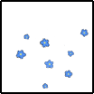
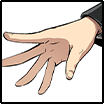

結果フェイズ
結果フェイズ：夜高ミツル
GM：では、ミツルくんはあのあと丸三日くらい寝込みました。GM：意識不明状態で。
忽亡ゆかり：みんなもまだぼろぼろ？
GM：それから一週間後くらいかな。
GM：なので、それぞれほどほどに癒えている頃でいいと思います。
乾咲フラン：じゃあデッケェ花束入りの果物籠を持って見舞うか
GM：美籠
乾咲フラン：お美舞い
乾咲フラン：フランはまあ右腕ぐらいしかやられてなかったしな
糸賀大亮：俺も脚と…
糸賀大亮：あ、心臓もか。真城にやられた奴。
GM：プルサティラと真城がやった傷しか残っていない。
夜高ミツル：三話四話あんまり部位飛ばなかったね
糸賀大亮：実際は俺が勝手にファンブルしただけだが…
GM：直接打撃のモンスターじゃなかったからね。
GM：では、ミツルにとってはそろそろ見慣れた天井。
GM：いつもの闇病院。
GM：そしてそこに、
GM：真城朔の姿はない。
夜高ミツル：「…………」
GM：一度も見舞いに来ることはないまま、一週間が過ぎた。
GM：あの戦いの夜からは十日後。
GM：上体を起こせる程度には傷は癒えてきたが、退院まであと半月ほどかかるとの見込みを伝えられている。
夜高ミツル：真城は今も、D7に囚われているのだろう。
夜高ミツル：……実のところ。
夜高ミツル：やるべきことは、やりたいことはとっくに決まっていて。
夜高ミツル：あの時ミツルの脚を止めたのは、
夜高ミツル：真城に償いをさせるべきだとか、そんな当たり前の正しさじゃなくて。
夜高ミツル：今真城を無理やり逃しても、きっと失敗するという予感の方で。
夜高ミツル：向こうは真城が逃げ出すことを想定していないはずがないし、
夜高ミツル：自分はプルサティラの魔法の期限が来てしまえば、動けない。
夜高ミツル：そうなれば、真城は自分を置いて逃げることはできなかっただろう。
夜高ミツル：……そして逃がすことに失敗すれば、きっと二度目はない。
夜高ミツル：だから、やるならば。
夜高ミツル：準備をして、自分にできる、全てで。
夜高ミツル：真城を、取り戻す。
夜高ミツル：焦りはある。
夜高ミツル：だけど、焦って失敗しては元も子もない。
夜高ミツル：今は傷の治療に専念して、そして。
夜高ミツル：──そう決めていたから、お見舞いに来た仲間を迎えるミツルの様子は、落ち着いたものだった。
GM：覚悟完了済みしてる 入院しながら
GM：腹を括っている 反社の……
糸賀大亮：臥薪嘗胆だ
GM：冷静にヤバいことするやつが一番ヤバいってばっちゃが
GM：衝動殺人と計画殺人では罪の重さがダンチだし……
糸賀大亮：殺しはしないから大丈夫（相対評価）
忽亡ゆかり：こえーよこいつ
夜高ミツル：組織に反社アタックかけるやつだぞ
乾咲フラン：ヒヒヒ
GM：ゆかりちゃんにこえーよと言われるところまで来てしまった
GM：ミツルくんが……
糸賀大亮：あのミツルくんが
GM：物語ってやつだな……
乾咲フラン：サイドチェストの上にドンと果物アンドフラワーを置きながら。
糸賀大亮：「大人しくしているようだな」と、やや遅れて現れた。こちらも紙袋を提げている。
夜高ミツル：「あと半月くらいで退院できるらしいです」
糸賀大亮：「半月か……」と相槌のように答えながら、最後に入ってきたゆかりの方へ目を。
忽亡ゆかり：「わ。みんな居るじゃん」最後にゆかりが訪れる。
忽亡ゆかり：「あ、どもっす」まだ腹部の傷が完全には癒えていないらしく、引きずるような歩き方をしている。
夜高ミツル：ずっと一人で入院していたので、にわかに賑やかになった病室が嬉しく感じる。
糸賀大亮：軽く会釈をした。「そっちも、まだかかりそうだな」
乾咲フラン：「忽亡クンも、相当な傷だったな……」ゆかりに労りの視線を投げながら。
忽亡ゆかり：「おかげで長めの休暇をもらえましたよ。まあ、近いうち戻れるでしょ」
乾咲フラン：「無理はするなよ～」と言いつつ、ミツルに視線を向け——「もっとも、君はそろそろ無理をしそうじゃないか？」
夜高ミツル：「…………無理は、しませんよ？」
夜高ミツル：悪戯がバレたような、バツの悪そうな表情。
夜高ミツル：「……真城が、どうなってるとかって」
夜高ミツル：「分かります？」
夜高ミツル：話を逸らすみたいな体で言い出したけど、全然逸れてないんだよな。
乾咲フラン：真っ直ぐ向かってんだよな
GM：フォゲットミーノットを討伐したその夜に確保されたらしい検体が、D7の研究施設に収容されているとのこと。
GM：その検体の詳細は不明。施設の外に出された様子もない。
GM：研究者と一部の特別な許可を受けた狩人以外にはその詳細が掴めずにいる。
糸賀大亮：「…花の名前を冠するモンスターを誰が作り出していたか。
そういうような話は、まったくこっちの方には下りて来てない」と言っておきます。
忽亡ゆかり：「……うちも、同じく」
乾咲フラン：やや声を潜めながら「ウチのメイドによると、ある研究施設に——」説明します。
夜高ミツル：「……検体」不愉快さを隠せず眉根を寄せる。
乾咲フラン：「——……という事で、まだ、そう行った扱いを受けている……生きている可能性はあるということだ。」
夜高ミツル：「……ありがとうございます」
夜高ミツル：「生きてる可能性がある」
夜高ミツル：「それが分かれば……」
乾咲フラン：「やるのか？」
夜高ミツル：「…………」少しだけ躊躇して、
夜高ミツル：頷く。
夜高ミツル：隠してもきっとバレてしまうだろうというのと、
夜高ミツル：こういう時は素直に頼った方がいい、というのを
夜高ミツル：今までの狩りで教わってきた。
夜高ミツル：……これから自分がやることは、狩りではないのだけど。
夜高ミツル：「……俺は」
夜高ミツル：「真城を、取り返しに行きます」
乾咲フラン：腕を組んで、フフ～ンと笑う。
乾咲フラン：「いや～ここだけの話、須藤クンには少し立腹しているんだよなぁ私は。」
乾咲フラン：「せっかく大きな狩りが終わったのだから、私は全員でお茶会をしたかったのだが……須藤が邪魔をしたじゃないか。」
乾咲フラン：「ここだけの話……やるなら、少しは力になろう。」
夜高ミツル：「……ありがとうございます」
夜高ミツル：「乾咲さんは、そう言ってくれるんじゃないかと思ってました」
乾咲フラン：（フフン……ってポーズ）
忽亡ゆかり：「…………マジで言ってる？」
夜高ミツル：「マジですよ」
忽亡ゆかり：頭を抱える。
乾咲フラン：「私の判断基準は美かそうでないかが第一で次に法だからな。」
GM：ここでゆかりさんがまた常識人側に立ってくれるの、戻ってきたな～という感じがある
GM：円環～
乾咲フラン：帰ってきた
糸賀大亮：美だな～
GM：まずは美！ 次に法！
糸賀大亮：D7は美しくもないし法も無視してるということよ
GM：つまり……破壊して構わないってことね！
乾咲フラン：人間はいつか美しくなる可能性を秘めているけど、建物はそれに準じないので破壊してもよいものとする
GM：容赦
乾咲フラン：価値観ネウロかよ
夜高ミツル：「この辺りにもいられなくなるし」
夜高ミツル：「まあ……普通に犯罪ですよね」
忽亡ゆかり：「今までとはわけが違う。君がやろうとしてるのは、悪い事だよ。わかってる？」
夜高ミツル：「……はい」
夜高ミツル：「相手は吸血鬼でも魔女でもないし」
夜高ミツル：「犯罪で、多分追われることになって……」
夜高ミツル：「それでも」
夜高ミツル：「真城が罪に対してなにかしら……償って、それで帰ってくるならともかく」
夜高ミツル：「実験体扱いなんて、俺は我慢できない」
夜高ミツル：話を聞く前から襲撃を考えていたが、それはそれ。
忽亡ゆかり：「……彼は、同意して同行したんだよ」
夜高ミツル：「…………はい」
夜高ミツル：自分から。きっと二度と戻ってこないつもりで。
糸賀大亮：「D7に」と、ぼそりと呟くように言う。
糸賀大亮：「善意の情報提供でもするか？」ゆかりに、ぼんやりした口調で聞く。
忽亡ゆかり：「ははっ。近々、侵入を企てる狩人の集団が居ますって？」
糸賀大亮：顎を引いた。笑っているようにも見える。
夜高ミツル：ゆかりを見る。
夜高ミツル：そうしないと信じてる、そう言わんばかりの顔。
夜高ミツル：そうでなければ、ここで打ち明けたりはしていない。
乾咲フラン：「陽動の人手なら、ウチの家があるぞ」
夜高ミツル：「……そもそも、D7に何の権利があって真城を連れてってるんだって話ですよ」
忽亡ゆかり：「D7に真城を裁く権利なんて無いってか？」
糸賀大亮：「D7には、そもそも裁くつもりもないだろう」
夜高ミツル：「調査機関ですよ？」
乾咲フラン：「まあ、D7にも……関係者がいるのかもしれない。が、須藤のやっている事は別だ。あいつはただのD7としての本能で動いているだろう。」
忽亡ゆかり：「そりゃ誰だって、私刑の権利なんて持っちゃいない。けどそれを言っちゃあ、狩人の存在自体の否定だろう。みんな色んな思惑で、モンスターに立ち向かってる」
忽亡ゆかり：「……チクっちゃうのも、悪くないかもしれない」
忽亡ゆかり：「みんなが血迷った真似をするのを見過ごすぐらいなら、多少強引にでも諦めさせる方がマシかも」
乾咲フラン：「おやおや……」
夜高ミツル：「…………するんですか？」
忽亡ゆかり：「だとしたら、どうする？」
夜高ミツル：「……お願いします。黙っててもらえませんか」
夜高ミツル：ゆかりの目を見る。
忽亡ゆかり：「黙らないって言ったら、私、どうなっちゃうの？」
夜高ミツル：「……納得してもらえるまで、説得するしか」
忽亡ゆかり：「…………なんだそりゃ」
忽亡ゆかり：「肝心なところで甘いな君は。相変わらず調子狂っちゃうよ」
夜高ミツル：「忽亡さんのこと、信じてるんです」
夜高ミツル：「ちゃんと話せば、分かってくれるって」
忽亡ゆかり：「勝手な理屈だ。君は話しても分かってくれないくせに」
夜高ミツル：「……それは、まあ、いや……」
夜高ミツル：確かにどれだけ反対されても諦める気はないけど……。
忽亡ゆかり：「そーゆーのはな、相手の好意につけこんで、譲歩させてるっていうんだよ。わかるか。こんにゃろう」つんつんと指で額をつつく。
夜高ミツル：「う…………」
夜高ミツル：「す、すみません…………」
夜高ミツル：つつかれた。
GM：こいつ……
GM：ほんとに心の底からこいつ……っておもっちゃったよ
糸賀大亮：ひひひ
GM：ゆかりさんもっと言ったれ！
糸賀大亮：でもゆかりさんは分かってきてくれたから……
乾咲フラン：澄んだ目の反社会
糸賀大亮：淀みない目
GM：年上の女に甘えるな
忽亡ゆかり：このガキ～～～～！！！
糸賀大亮：ゆかりさんが譲歩してくれた四話だったな～と回想してしまった
GM：ほんとにだよ
GM：なんでお前はさっさと譲歩してんだよ
乾咲フラン：笑った
糸賀大亮：譲歩はしていない すべきと思ったことをしているだけと証言しており
GM：こいつ……………
夜高ミツル：「そのつもりです」
忽亡ゆかり：大きく嘆息。
忽亡ゆかり：「どこで教育間違えましたかね？」
乾咲フラン：「火炎瓶を持ち始めたあたりかなぁ」
夜高ミツル：反社の兆候
糸賀大亮：「教育したのは真城だろう」
忽亡ゆかり：「あんにゃろう」
夜高ミツル：「D7にもですよ」
忽亡ゆかり：「その親の喉笛を噛み千切ろうとしてるじゃんか。恐ろしい子だよ君は」
夜高ミツル：「まあ……世話になった分を返すってことで」
夜高ミツル：真城が世話になった、という意味だ。
忽亡ゆかり：「色んな人に迷惑がかかるよ」
夜高ミツル：「……はい。忽亡さんたちにも」
夜高ミツル：「だから、ちゃんと言っておきたかったんです」
夜高ミツル：「……今までお世話になって、助けてもらって」
夜高ミツル：「それなのに、こんな」
夜高ミツル：「迷惑をかけるようなことを、します」
夜高ミツル：「……ごめんなさい」
忽亡ゆかり：「…………私は何も聞かなかった」
忽亡ゆかり：「だから、ごめんなさいと言われても、何の事だかよくわからないな」
夜高ミツル：「……！」
夜高ミツル：「……ありがとう、ございます」
忽亡ゆかり：「ふんだ」
夜高ミツル：思えば、この人に色んなことを譲歩させてきてしまったと思う。
夜高ミツル：優しく、厳しく接してくれることに、甘えすぎてきたのかもしれない。
夜高ミツル：……自分の姉とゆかりは全然似ていないけど、それでも、
夜高ミツル：ゆかりを思うときは、姉のような人だと感じてしまうことがあった。
夜高ミツル：……そんな人に最後まで迷惑をかけ通してしまうことになることは、心苦しい。
夜高ミツル：それでも、どうしてもやりたいことがある。
GM：ここで姉弟重ねてくるの最悪の男だよ！
GM：（褒めてる）
忽亡ゆかり：貴様！！！！！！！！！！！
乾咲フラン：フフッ
糸賀大亮：ヒヒヒ
忽亡ゆかり：クソ虫良男
GM：ギャハハ
夜高ミツル：善性の最悪の男、楽しい
忽亡ゆかり：クソガキャ～～～～～！！！！！！！！！！
忽亡ゆかり：これできれいな目してるの、マジでやばい 悪役の素質がある
GM：これから悪をやって逃げる覚悟が決まってるからな……
夜高ミツル：会話の様子から、少なくとも止めるつもりはないのだろうが。
糸賀大亮：ちょっと笑った。真城を説得する前に、全員の意見を聞いておけ、と言ったのを思い出したのだった。
糸賀大亮：「後ろ暗いことしている、という認識は連中にはないだろうが」
糸賀大亮：「胸を張ってやっている、というわけでもないだろう」
糸賀大亮：「しらばっくれられる範囲なら協力するさ。お前が真城を助けるというなら」
夜高ミツル：全員の意見を聞け、そう言われたことをもちろん覚えている。
夜高ミツル：「ありがとうございます」
夜高ミツル：「そうしてもらえると、助かります」
夜高ミツル：第一印象こそ決して良くはなかったものの、この人の言うことはいつも冷静で、筋が通っていて。
夜高ミツル：自分が感情的になってしまった時、考えが浅かった時、ずっと助けられてきた。
夜高ミツル：きっと誰がいなくても真城を説得することはできなかったけど、その中でも大亮には特に助けられたように思う。
糸賀大亮：「それに」
糸賀大亮：「……俺は、真城には貸しがある」
糸賀大亮：「ドアの修繕費、返してもらわなきゃいけないだろう」
糸賀大亮：しかめっ面で言った。
夜高ミツル：「…………ドア」
糸賀大亮：「ドアだ」
乾咲フラン：「……」目を細めて痛ましい表情を浮かべている
夜高ミツル：呆けたように、繰り返して。
夜高ミツル：「……そうですね」
夜高ミツル：笑う。
夜高ミツル：「そうだった」
夜高ミツル：「返させます、ちゃんと」
糸賀大亮：「ああ、お前からも言ってやってくれ」
夜高ミツル：「はい」
夜高ミツル：笑うとちょっとだけ傷に響いて。でもこういう痛みなら苦じゃなかった。
夜高ミツル：フランを見る。
夜高ミツル：「乾咲さんには……特に迷惑をかけることになっちゃいますね」
夜高ミツル：最初は、よく分からない人だと思った。あまりにも自分の周囲にいたことがないタイプで。
夜高ミツル：多分、これからも彼のような人に会うことはないのだろう。
乾咲フラン：「まあ、私達の変装がどこまで通じるか……腕試しだな。」
夜高ミツル：彼ほど、美しい人とは。
夜高ミツル：自分の中にある何かを貫くこと、信じること、というのを彼には教えてもらった。
乾咲フラン：「D7の情報網の外にも美は居る……彼らならリスクを抑える事もできよう」美ネットワーク。
夜高ミツル：その美しさは鮮烈だった。
夜高ミツル：「ありがとうございます。最後まで、お世話になります」
夜高ミツル：自分も、自分が信じた美しさを成していこうと思う。
夜高ミツル：狩人たちの、仲間たちの顔を見渡す。
夜高ミツル：──自分が一番弱くて、年下で、経験が浅くて。本当に、何度も助けられてきた。
夜高ミツル：この人達がいなければ、あっさりどこかで死んでいただろうし。
夜高ミツル：この人達の助けで、あの日真城を繋ぎとめることができた。
夜高ミツル：「俺は」
夜高ミツル：「真城を助けます」
夜高ミツル：改めて、決意を口にする。
夜高ミツル：この人達の助けで成し得たことを、思いを、どこまでも貫くことが、
夜高ミツル：ほんのわずかでも恩返しになることを願って。
忽亡ゆかり：これで綺麗に〆られるみたいな空気になってるの、マジで無法者集団という趣があって最高だな
乾咲フラン：ほんとだよ
GM：最後に破壊活動で打ち上げ花火！
糸賀大亮：盛り上げてこうぜ！
忽亡ゆかり：みんなイイ面構えをしている
夜高ミツル：こんなにガンギマった男になるとは思わなかったな
乾咲フラン：ガンギマらねえと真城を救えねえ
夜高ミツル：3話からそうだもんな……
忽亡ゆかり：3話で覚悟確認されてるうちに、なんかこう、仕上がっちゃったよね
GM：これまでの戦いで、狩りを共にしてきて、
GM：信頼できる、背中を預けられる――とんでもない無法にも、協力を得られる仲間ができたことは。
GM：彼らの、主にフランのお陰で、真城朔の情報を掴むことはそう難しくなかった。
GM：彼はまだ、この街にあるD7の研究施設にいる。
GM：外出はなく、場所を移される予定も今のところはないそうだ。
GM：であれば。
GM：何もかもなりふり構わずに押し入ってしまえば、
GM：その姿を捉えることも、不可能ではないかもしれない。
GM：あなたたちは夜の街をゆく。
GM：決行の日時は決まっていた。
GM：研究施設とはいえ、狩人の組織を襲撃するのだから、
GM：なるべく戦力の手薄になる瞬間が好ましいだろう。
GM：――その計画を実行したのは、
GM：満月の夜だった。
結果フェイズ：忽亡ゆかり
GM：では、GM：彼らの襲撃が済んだ後でしたか。
忽亡ゆかり：はい
GM：家にいる頃かな。夕飯時でどうでしょう。
GM：夕飯作る前？
GM：作る前がいい気がする。
忽亡ゆかり：今日の夕飯なににしようかな～！
GM：というようなゆかりの元に、一通のメールが届きます。
GM：それは彼からのメール。
GM：馬鹿げた計画を大真面目に立てて、さらにとんでもないことに本当に実行してしまった彼らからの、報告のメールです。
忽亡ゆかり：「お……」
忽亡ゆかり：ポケットが震える。携帯電話を取りだして、その画面を読む。
GM：まあ、概ね、彼らしい文面ですね。
GM：こう来るだろうな、とゆかりが予測した通りのメールが相変わらずの真面目さで。
GM：同じ真面目さで計画を実行してしまったので、同じ真面目さでこんなメールを送ってきやがる。
乾咲フラン：地の文にきやがる言われる
忽亡かなた：フランクな地の文が売りです。
夜高ミツル：報告しますね
夜高ミツル：感謝や謝罪などが綴られていると思います
忽亡かなた：お世話になったからね……
忽亡かなた：ギャハハ
乾咲フラン：フフッ
忽亡かなた：言うことは聞かないで勝手に襲撃計画実行するくせになあ！？
夜高ミツル：一方的に感謝と謝罪が……
忽亡ゆかり：「…………そっか。終わったかあ……」半分は独り言。半分は、同じ部屋にいる人間にも聞こえるような声。
忽亡かなた：「…………」
忽亡かなた：「……姉さん、どうかしたの？」
忽亡かなた：スマホを見てにやにやしている姉を訝しんで、かなたが本から顔をあげます。
忽亡ゆかり：「……いや……まあ……」さすがに仲間の蛮行を弟に告げる気にはならず。
忽亡かなた：「？」
忽亡ゆかり：「ようやく、これでホントに一休みできるみたいだ」
忽亡ゆかり：「仕事仲間が、遠くに離れるらしい」
忽亡かなた：目を瞬く。「……あの危ない仕事の？」
忽亡ゆかり：「だから、あのメンツで集まって仕事する事も……もう、ないだろうな」
忽亡かなた：「ああいう仕事にも転勤とかあるんだ……」
忽亡かなた：素朴な感想。
忽亡ゆかり：「ま、いろんな事情でね」本当に色んな事情で。
忽亡かなた：「ふうん」よく分かっていない感じ。本を閉じる。
忽亡かなた：「でも、まあ」
忽亡かなた：ゆかりの隣に腰を下ろして。
忽亡かなた：「姉さんがこれでゆっくりできるなら、良かった」
忽亡ゆかり：「……そうだね……」目の前の大きな事件は、一つの幕を閉じた。
忽亡ゆかり：「うん。私、頑張った。しばらくはゆっくり羽を伸ばすよ」
忽亡かなた：「……うん」
忽亡かなた：深く頷く。
忽亡かなた：「姉さん、本当に頑張ってたと思う……」しみじみと。
忽亡かなた：「…………」
忽亡かなた：隣に座ったまま黙り込んで、ちらちらとゆかりを窺ってる。
忽亡ゆかり：醜くあがいた。満点とはとても言い難い、もがくような戦いだったと思う。狩人生活の大半は現実逃避でできていて、全力を出せたとも言い難かった。
忽亡ゆかり：けど。
忽亡ゆかり：狩人を始めて、走り続けてきたから、今こうして隣に最も大事な存在が在る。
忽亡ゆかり：かなたへと目を向けて、微笑んだ。
忽亡かなた：ちょうど目が合う。
忽亡かなた：少し眉を寄せて。どこか難しい顔をして。
忽亡かなた：黙ったまま、しばらく何か、迷う様子を見せていたが。
忽亡かなた：「……姉さん」
忽亡かなた：ゆかりに身体を向けて、おずおずと両腕を広げてみせる。
忽亡ゆかり：「……」
忽亡かなた：「…………」
忽亡ゆかり：「へへっ」その両腕の中に飛び込む。
忽亡かなた：緊張と恥じらいの混ざった面持ち。
忽亡かなた：に、飛び込まれて笑みが混ざり込む。
忽亡かなた：ゆかりを受け止めて、背中に腕を回した。
忽亡かなた：「……お疲れ様」
忽亡かなた：ややぎこちない手付きで背中を撫でている。
忽亡ゆかり：「……この一言とハグがあったら、いくら頑張ってもお釣りが来ちゃうな」
忽亡かなた：「そ、そう？」
忽亡ゆかり：「そうだよ」
忽亡ゆかり：「かなたが居れば、いくらでも頑張れる」
忽亡ゆかり：「いたら幸せ、いなきゃ不幸！」
忽亡かなた：「……あはは」
忽亡かなた：思わずといった笑い声。
忽亡かなた：「それは、良かった」
忽亡かなた：「何よりです」
忽亡かなた：「……実際のところ、さ」
忽亡ゆかり：「うん？」
忽亡かなた：「俺、姉さんがいっぱい頑張ってきたこと、というのは知ってても」
忽亡かなた：「それがどれだけ大変だったか」
忽亡かなた：「どれだけ苦労してきたか、なんてのは、全然分かってないわけでさ」
忽亡かなた：ゆかりの背中を撫でながら語る。
忽亡ゆかり：「あー……それは……」
忽亡ゆかり：「……死ぬほどみっともなかったから、できれば知らないままでいてほしい……」
忽亡かなた：「……まあ」
忽亡かなた：「無理に教えてほしいとは言わないよ」
忽亡かなた：「姉さんにだって、知らせたくないことはあるだろうし」
忽亡かなた：「でも、だからこそ、なんていうか……」
忽亡かなた：「……俺に」
忽亡かなた：「してほしいこととか、できることとか、そういうの」
忽亡かなた：「あったら、遠慮なく言ってほしい」
忽亡かなた：「俺だって、姉さんが笑ってくれるなら、いくらでも頑張れるのは」
忽亡かなた：「同じつもり、だから」
忽亡ゆかり：「……ふふっ」
忽亡かなた：ぬくもりとともに語られる、かなたの言葉。
忽亡かなた：拙いながらもまっすぐな弟の想い。
乾咲フラン：いつセックスに転ぶか…という緊張感を勝手に持って見ている
忽亡かなた：コラ！
夜高ミツル：ふふふ
糸賀大亮：見守り態勢
忽亡ゆかり：「ほんとのこと全部伝えて、慰めてほしいなあという気持ちもあります」
忽亡かなた：「……う、ん」
忽亡かなた：重々しく頷く。
忽亡ゆかり：「ほんとにやばい部分は、もう全部言っちゃったしな！」
忽亡かなた：「あれ」
忽亡かなた：「大変なときに言わせたよな……って」
忽亡かなた：「結構後で冷静になってた……」
忽亡ゆかり：「それ言うなら、私はもっと大変な時にかなたくんに襲われましたよ」
忽亡かなた：「…………」
忽亡かなた：「……はい…………」
忽亡かなた：しゅん……。
忽亡ゆかり：「ありがとね」
忽亡かなた：「……ん」
忽亡かなた：「……あのさ」
忽亡かなた：「その……将来、のことなんだけど」
忽亡ゆかり：「うん」
忽亡かなた：ゆかりを抱きしめる腕に力が籠もる。
忽亡かなた：なおも密着しながら、
忽亡かなた：「……その」
忽亡かなた：「まあ」
忽亡かなた：「大学……」ぼそぼそと。
忽亡ゆかり：「大学？」聞き返す。
忽亡ゆかり：「大学に行きたいの？」
忽亡かなた：「こっ」
忽亡かなた：「国公立、狙うけど」
忽亡かなた：「いやそれはまあ、負い目とか、そういうのじゃなくて、ヘンに気にしてとかではなく」
忽亡かなた：「純粋に行きたいところが近くで、それで、……」
忽亡かなた：やや上擦った声で言い訳めいて。
忽亡かなた：「……迷ったんだよ」
忽亡ゆかり：「……？」
忽亡かなた：「姉さんのさ、色々、知って」
忽亡かなた：「姉さんっていうか、……まあ俺の方なのか？ とにかく」
忽亡かなた：「それなのに大学とかどうこう、言ってる場合じゃないだろって」
忽亡かなた：「そういう風にも、思った」
忽亡かなた：「ただでさえ姉さんには苦労かけてるし……」
忽亡ゆかり：「そんなこと……」言いかけて切る。かなたの言葉を遮らないように。
忽亡ゆかり：沈黙で続きを促した。
忽亡かなた：「…………」促され。
忽亡かなた：抱擁を緩めて、ゆかりの顔を見る。
忽亡かなた：真剣な表情。
忽亡かなた：「……でも」
忽亡かなた：「姉さんはここまでずっと」
忽亡かなた：「ずっと、頑張ってきてくれて」
忽亡かなた：「俺はそのおかげで今ここにいて、生きていられて……」
忽亡かなた：「それは」
忽亡かなた：「ただ俺が生きてればそれだけでいい、とかじゃなくて」
忽亡かなた：「……なんていうか、その……」口ごもりながら、
忽亡かなた：「俺が姉さんの人生を支えたいっていうのと、同じ、なんだろ」
忽亡ゆかり：「……！」
忽亡かなた：ゆかりの笑顔に、眉を下げる。
忽亡かなた：「俺、まだガキでさ」
忽亡ゆかり：「……うん」
忽亡かなた：「分かってないことだらけで、まだまだ学ばなきゃならないことがいっぱいあって」
忽亡ゆかり：「……うんっ」
忽亡かなた：「無理に急いでも多分、それは、ダメで」
忽亡かなた：「余計に負担かけたり、姉さんに負い目作っちゃったりとか、そういうのは嫌で……」
忽亡かなた：「だから……」
忽亡かなた：身体を離して、正座をする。
忽亡かなた：ゆかりに向き直り、深々と頭を下げながら。
忽亡かなた：「また――まだ、苦労をかけてしまうけど」
忽亡かなた：「俺を大学に行かせてください」
忽亡かなた：「ちゃんと姉さんを支えられるような大人になるために、がんばります」
忽亡ゆかり：一呼吸おいて、頷く。
忽亡ゆかり：「喜んで」心からの喜色の笑みを浮かべて。
忽亡ゆかり：「あのね」
忽亡ゆかり：「私、高校生はもっと気楽に生きていい年頃だと思ってるの」
忽亡ゆかり：「かなたには、ずっと気を使わせてきちゃったから、きっと素直にそうは思ってくれないだろうけど……」
忽亡かなた：「…………」少しだけ顔を上げて、ゆかりの顔を窺う。
忽亡ゆかり：「かなたが自分のしたいことを、ちゃんと自分の意思で選んでくれる……そうできるように、その選択肢をきちんと用意するために、頑張ってきました」
忽亡かなた：「……うん」
忽亡かなた：そのことは、よくよく理解している。
忽亡ゆかり：「だから、うん」
忽亡ゆかり：「その言葉が聞けて、うれしい」
忽亡かなた：「うん……」
忽亡かなた：ゆかりの返答に、かなたも笑う。
忽亡かなた：おずおずと身体を起こして、けれどまだきちんと正座したまま。
忽亡かなた：「……そりゃ、姉さんが危ない仕事してて」
忽亡かなた：「俺と同じくらいの年頃だったり、なんなら俺よりも弱そうに見える人がそこにいたりして」
忽亡かなた：「じゃあ俺も守りたいー、みたいに思わないわけじゃ、ないけどさ」
忽亡かなた：ぼそぼそと言い訳めいて。
忽亡かなた：「……それは」
忽亡かなた：「今まで俺を守ってくれた姉さんへの冒涜だろ」
忽亡ゆかり：「……うん」
忽亡ゆかり：ちらりと冒涜野郎の顔が浮かんだ。
乾咲フラン：冒涜野郎
夜高ミツル：一体誰のことかな……
糸賀大亮：思いもつかないな
忽亡かなた：「ちゃんと勉強して、それでできれば身体も鍛えて」
忽亡かなた：「色んな意味で姉さんを守れる大人に、なるので！」
忽亡かなた：「……そのために、申し訳ない――姉さんはそんな風には思われたくないかもしれない、けど」
忽亡かなた：「でも、苦労はかけてしまうから……」
忽亡かなた：「あっでも」
忽亡かなた：顔を上げる。
忽亡かなた：「奨学金は狙うから！」
忽亡ゆかり：「……ふふっ」
忽亡かなた：「狙えるし、俺なら！ 頑張るので！」
忽亡かなた：「……それも」
忽亡かなた：破顔する。
忽亡かなた：「姉さんのおかげだけどさ」
忽亡かなた：これまでずっと、勉強に専念させてくれた、姉さんの。
忽亡ゆかり：「…………」
忽亡ゆかり：「っ……やっべえ」
忽亡かなた：「えっ」
忽亡ゆかり：「泣きそうです」
忽亡ゆかり：胸が苦しくて、でも溜まらなく嬉しくて。
忽亡かなた：「…………」
忽亡かなた：ぱちぱちと瞬き。
忽亡ゆかり：「幸せ……だなあ」
忽亡かなた：「……大丈夫だよ」
忽亡かなた：腰を上げようとして、
忽亡かなた：「泣いても、大丈――ぶっ」
忽亡かなた：途中で足がもつれて、
忽亡かなた：そのまま逆にゆかりの胸に飛び込む形に。
忽亡かなた：なんなら勢い、押し倒し。
忽亡かなた：どさっ。
忽亡ゆかり：「おおっ！？」
忽亡かなた：「…………」
忽亡かなた：硬直している。います。
忽亡ゆかり：「……かなた」
忽亡かなた：「…………はい」
忽亡ゆかり：「あの時……ホテルの、あの時さ」
忽亡かなた：「っ」
忽亡かなた：さっと頬が紅潮する。
忽亡かなた：なんなら耳まで赤くなる。
忽亡ゆかり：「かなたの気持ち、ちゃんと伝わった」
忽亡かなた：「…………」
忽亡ゆかり：「心配と、不安と、緊張と、あと…………」
忽亡かなた：真っ赤になったまま、小さく頷く。
忽亡ゆかり：「……ふふっ」
忽亡ゆかり：「私だけじゃないんだなって、安心できた」
忽亡かなた：「…………」
忽亡かなた：「それ、なら」
忽亡かなた：「良かった……です」
忽亡かなた：「…………ごめん」
忽亡ゆかり：「なにが？」
忽亡かなた：ぎこちなくゆかりの上からどきます。やっと。
忽亡かなた：「いや」
忽亡かなた：「あの」
忽亡かなた：視線を逸らしながら。
忽亡かなた：「今のは、事故なので」
忽亡かなた：「事故だけど、その、……」
忽亡かなた：「……いや、事故ではあるけど」
忽亡かなた：「でもまだ早いので」
忽亡かなた：「俺は、ガキなので……」
忽亡かなた：目を逸らしています。
忽亡ゆかり：「……うん」
忽亡ゆかり：「大丈夫。待ってる」
忽亡かなた：「……うん」
忽亡かなた：「時間はかかるけど、待ってて」
忽亡ゆかり：「待ってるよ。毎日ずっと、かなたの成長を見ながら」
忽亡かなた：「……あはは」
忽亡かなた：「気が抜けないな～」
忽亡かなた：気の抜けた笑いを漏らしてから、
忽亡かなた：「……姉さんは、どうするの？」
忽亡かなた：「これから」
忽亡かなた：「仕事、落ち着いたって話だけど……」
忽亡ゆかり：「……かなたはさ」
忽亡かなた：「うん」
忽亡ゆかり：「ちゃんと向き合って、自分の気持ちと私の気持ちを考えて、進路を選んでくれた」
忽亡かなた：「……うん」
忽亡ゆかり：「だから、私もそうするよ」
忽亡ゆかり：「狩人、やめちゃおっかな～って！」
忽亡かなた：「…………」
忽亡かなた：「わお」
忽亡かなた：瞠目。
忽亡かなた：それから笑って。
忽亡かなた：「やっぱ良くないよね」
忽亡かなた：「危ないの……」
忽亡かなた：「危ないし……」
忽亡かなた：危ないので。
忽亡ゆかり：「本当にね」
忽亡かなた：「まあ、誰かがやんなきゃなんないのかもしれないけどさ」
忽亡かなた：「姉さんはいっぱい頑張ったんだから、やめていいでしょ」
忽亡かなた：「うん」
忽亡ゆかり：「……まあ、そうは言っても」
忽亡かなた：真面目ぶって頷いているが、口元の笑みが消せていない。
忽亡ゆかり：「見えるものは見えちゃうし、戦えるものは戦えちゃうし」
忽亡かなた：「……そうなの？」
忽亡ゆかり：「まあね」
忽亡ゆかり：「だけど、自分から危ない事には首を突っ込まないようにする」
忽亡かなた：「！」
忽亡かなた：「うん、……うん」
忽亡かなた：「それがいいよ」
忽亡かなた：「そうしようよ」
忽亡かなた：「そうしてくれると、俺は嬉しい」
夜高ミツル：退職！
夜高ミツル：めでてえな……
乾咲フラン：寿退職じゃん
糸賀大亮：総決算も終わったしな
忽亡かなた：前の仲間はなんか襲撃とかやってるしよお
忽亡ゆかり：「職場とも、話をつけてきて、次の仕事も決めたんだ」
忽亡かなた：「早い」
忽亡かなた：「……姉さん、本当手際いいよね」
忽亡ゆかり：「そうかあ？」
忽亡かなた：「そうだよ」
忽亡ゆかり：「だってほら、やりたい事が決まったらさ」
忽亡ゆかり：「居てもたっても居られない、だろ？」
忽亡かなた：「……それは」ふふっと笑って。
忽亡かなた：「そうかもね」
忽亡かなた：「今度はどういう仕事になるの？」
忽亡ゆかり：「もともと、表の稼業は不動産だったからね。そっちはそのまま続ける」
忽亡ゆかり：「それからもう一つ。私の新しい役目はね──」
忽亡ゆかり：巨大なオフィスビルの中、そのワンフロアの一室、小さな会議室。
忽亡ゆかり：室内の空気はぴんと張りつめるような緊張感に満たされている。
忽亡ゆかり：そこに居るものは皆一様に鋭い目をしていた。
忽亡ゆかり：「お疲れ様です」
忽亡ゆかり：静かな部屋に、若い女の声が響く。
忽亡ゆかり：「今月から、今ここに集まっている皆さんに戦闘指南をさせていただく事になりました」
忽亡ゆかり：パイプ椅子に座るスーツ姿の狩人たちの前に、女性が立っている。
忽亡ゆかり：短いボーイッシュな茶髪にグレーのスーツ姿、女性の平均的な身長よりは多少大きく、しかし男性には及ばない程度、細く引き締まった体つきをしていた。
忽亡ゆかり：「……少し緊張してます。年上の方、表で上司にあたる方、裏で先輩にあたる方もいらっしゃいますね」
忽亡ゆかり：「改めまして、住宅事業本部事業開発二部、プランナーの忽亡です」
忽亡ゆかり：「今は都心部のタワマン企画を進行しております。完成は3年後を予定してますので、新築お悩みの方はぜひご相談ください。いい物件ですよ！」
忽亡ゆかり：軽く笑いかける。聴衆の緊張が少しだけ和らいだ。
忽亡ゆかり：「裏の方は、現在３年目の若輩者です。教える側であると同時に、私もまた教わる事が多いんじゃないかと思います」
忽亡ゆかり：「教官としての経験も初めてですので、至らない点などあればご指導ご鞭撻いただけますと幸いです」
忽亡ゆかり：深く頭を下げる。
忽亡ゆかり：「ではまず、今期のプログラムについてですが──」
男：「少しいいか？」
忽亡ゆかり：一人の男が遮る。年齢は40手前ほど、筋骨隆々たる大男だ。
忽亡ゆかり：「はい、沼津さん」
忽亡ゆかり：沼津と呼ばれた男は、女の先輩にあたる、ベテランの狩人である。
忽亡ゆかり：この世界に足を踏み入れた時に共闘をしたことがある。その体格は見せかけではないが、吸血鬼への憎しみで動くような、協調性に欠ける男だった。
男：「忽亡お前、自己紹介の内容が少し足りないだろ」
忽亡ゆかり：男は立ち上がり、聴衆の前へと歩みゆく。
忽亡ゆかり：「と、いいますと」
男：「噂になってるぞ。おまえが教官になった理由だ」
男：ぴたりと、女の目前で止まる。大人と子供ほどもある体格差で、顔を近づけて威圧する。
忽亡ゆかり：「……」
男：「狩人の生活に恐れを為したんだって？」
忽亡ゆかり：聴衆がざわつく。
男：「吸血鬼との闘いでブルっちまった。死ぬのが怖くなったから、戦場に立たないために上層部に掛け合ってこっちに立たせてもらったって」
忽亡ゆかり：「……あー」
忽亡ゆかり：はあ、と溜息を吐く。
男：「他にもあるぞ。狩人生活に耐えられなくて病んだとか、魔女に誘惑されて負けたとか──」
忽亡ゆかり：「そういうの、どこで聞いてくるかなあ……」
男：「認めるんだな？」
男：にやりと男の顔が歪んだ。
GM：この沼津とかいうやつ
乾咲フラン：沼津ゥ
夜高ミツル：俺たちのゆかりさんにテメー！
GM：お前が俺たちのゆかりさんとか言えねえだろ！
糸賀大亮：ヒヒヒ
夜高ミツル：はい………………
糸賀大亮：すかさず怒られるミツルくんだ
忽亡ゆかり：投げやり気味に認める女。どよめきの音が大きくなってゆく。
忽亡ゆかり：不安。不満。こちらは命がけの戦いに挑むというのに、指南役は臆病者で、そのうえ意思も弱く、実力も定かではない細身の女性。
忽亡ゆかり：上層部と何かコネが？聴衆からは、そんな疑惑の意思が見え透いていた。
男：さらに男は続ける。
男：「だいたい、お前は俺よりもずっと経験も浅くて──」
忽亡ゆかり：「ていうかさ」
忽亡ゆかり：その言葉を女が遮る。
忽亡ゆかり：「敬語」
男：「あ？ ッ゛」
忽亡ゆかり：かこん、と軽やかな音が響く。手首の動きだけで放たれた顎への一撃に、大男が沈んだ。
忽亡ゆかり：「敬語、使えよ。ここじゃ私が教官だ」
忽亡ゆかり：女の声は低い。
忽亡ゆかり：しん、と部屋は静まった。
忽亡ゆかり：「なあ」
忽亡ゆかり：こんこんと指で男の頭を叩く。
忽亡ゆかり：「なあなあなあ。勘違いしてないか？」
忽亡ゆかり：「私が指南役で、お前は生徒」
忽亡ゆかり：「従えよ。私に」
忽亡ゆかり：「ここでは労基もパワハラもない。プログラムは強制参加で、途中退出も禁止。血を吐こうがゲロ吐こうが、誰もお前を守っちゃくれない」
忽亡ゆかり：「それはなんでだ？それも全部、お前の死亡率を下げるために必要だからだ。だからお前は私の言う事を聞かなきゃいけない」
忽亡ゆかり：「お前が」
忽亡ゆかり：男を指さす。
忽亡ゆかり：「私より」
忽亡ゆかり：自分を指さす。
忽亡ゆかり：「弱いからだ」
男：「………………」
夜高ミツル：めちゃめちゃ最高の気分
GM：即溜飲を下げている
糸賀大亮：大喜びシーン
GM：顧客の需要
夜高ミツル：スタンディングオベーションです
乾咲フラン：かっこよ～～
忽亡ゆかり：年上の者も、上司にあたる者も、先人の狩人にもまるで怯むことなく、全員に向かってそう言い放つ。
忽亡ゆかり：誰も答えない室内を見渡し。
忽亡ゆかり：「ま、よろしく！」
忽亡ゆかり：「ここでは文字通り、血反吐を吐くことになるけど……」
忽亡ゆかり：「大丈夫、後悔はさせないから！」
忽亡ゆかり：そう言って、鬼教官は笑った。
結果フェイズ：乾咲フラン
乾咲フラン：真城と夜高と、FMNの最後のやりとりを遠巻きに見つめる。乾咲フラン：夢のように解けていった花を目で追って空を見て——何もかもが終わったのだと、頭よりも先に心が理解していた。
乾咲フラン：「碧…………」
乾咲フラン：「碧、私は君を……」
乾咲フラン：「愛してた……」
乾咲フラン：そよ風に掻き消されるほどの小さな声で、最後まで自分の力で本人に言えなかった言葉を呟いた。
乾咲フラン：その声を聞き遂げる者は、もういない。
乾咲フラン：暫く経って、腕の傷が癒えて——いや、癒える少し前から、フランは精力的に仕事をこなすようになった。
乾咲フラン：夜高の計画に積極的に加担したり、表の仕事を増やしたり、モノビーストとの戦闘に向かったり……とにかく己を忙殺する事に努めていた。
乾咲フラン：がらんどうになった心を感じる事を、数年ぶりに味わう孤独の海の深さを、身を切るような喪失感を……
乾咲フラン：5年前に十分味わったそれを、また味わう事を避けていた。
野嶋優香：「……いつもお疲れ様です」
野嶋優香：優香が紅茶を差し入れる。まだ残暑も厳しいこの頃、涼やかなフルーツアイスティーを。
乾咲フラン：「ありがとう。君もお疲れ様。」
野嶋優香：「今もここで働くことができて、嬉しいですよ」
野嶋優香：そう笑う。
乾咲フラン：いつもどおりの装いで。しかし、目の下のクマは化粧に巧妙に隠されていて。
乾咲フラン：「いやあ、家が破壊とかされなくてよかったよ」笑顔でアイスティーを取る。
野嶋優香：フォゲットミーノットが蘇り、狩人たちと戦ったあの夜では、
野嶋優香：結局、一切の死人が出ることはなかった。
野嶋優香：フランに言いつけられたとおりに優香は警戒していたが、無差別に民衆が襲われるようなこともなく。
野嶋優香：ただ、その夜には、勿忘草の花が咲いていたのだと。
野嶋優香：それだけが伝えられている。
乾咲フラン：「君の紅茶の腕もこなれてきたものだ……」笑顔を保ったまま——あの日殺した碧が飲んでいたフルーツアイスティーの事を、つい昨日の事のように思い出す。
野嶋優香：「恐縮です」軽く頭を下げる。
野嶋優香：「フラン様。……私は、ここに来られて良かったと思っています」
野嶋優香：「いいえ……受け入れていただけて幸いだった、と申し上げるべきでしょうか」
野嶋優香：優香もまた、遠くを見る目をしている。
乾咲フラン：別の狩人に連絡を取っていた指先を止め、優香を見る。
野嶋優香：「……兄を、見ました」
野嶋優香：端的な言葉。
乾咲フラン：「……」
乾咲フラン：勿忘草の中に浮かんでは消えた、忘れがたい人々の事を思う。
野嶋優香：「兄さんがいました。あの勿忘草の中に」
野嶋優香：「言葉も、交わしました」
乾咲フラン：じっと、優香の話を聞いている。
野嶋優香：「いつもの兄さんみたいだった。気が利かなくて、ちょっと見栄っ張りで」
野嶋優香：「そのくせ、ヘンなところで鋭くて」
野嶋優香：「そういう兄さんと、あの夜、話をしたんです」
乾咲フラン：「どうだった。」
野嶋優香：くすりと上品に笑った。この邸宅で働くようになってから身についた笑顔だ。
野嶋優香：「私」
野嶋優香：「理想というものが、ちゃんと分かったんです」
乾咲フラン：「……」
野嶋優香：「自分自身の頭で、それが理解できた」
野嶋優香：「……だから」
野嶋優香：「ありがとうございます。フラン様」
夜高ミツル：野嶋……
糸賀大亮：野嶋ァ…
忽亡ゆかり：その野嶋もまた殺してしまったが……
野嶋優香：最後まで引っ張るつもりはなかったがなんか存在感を残していった男ァ
夜高ミツル：いいキャラだよな～野嶋兄妹
夜高ミツル：界隈でも人気がある
野嶋優香：ニッチでは？
糸賀大亮：でも確かな需要が
夜高ミツル：野嶋好きな人結構いるよ
乾咲フラン：——理想だ。どれだけ否定しても、どうしても求めずには要られない。居ればいい、と思ってしまう。
乾咲フラン：……けれど、それを律することが——人間の……美徳だから。
野嶋優香：遠くを見つめて微笑む優香の横顔は、美しかった。
乾咲フラン：その横顔を見て思う。美麗派の狩人というのは……群れず、孤高の者が多い。
乾咲フラン：それは各々の美的感覚に依るものだけではない——
乾咲フラン：狩人を続けるうちに、失うものを、大切なものがあっても——そのまま胸の内にしまい込む。
乾咲フラン：孤高に立つ美麗派の狩人は、それを取り戻したくて足掻くことをしなかった——魔女や吸血鬼に屈する事が出来なかった、美の信奉者達の姿だ。
乾咲フラン：一人で立つ美に、どれだけの価値があるのか。隣に並び立つもののいない美に、どれだけ命を賭け、どれだけ大事な物を失っていく価値があるか。
乾咲フラン：疑問に思う時がないではなかった——……だが、それでも、乾咲フランは。
乾咲フラン：美しくあろうとすることを、やめることが出来なかった。
乾咲フラン：笑って目を閉じる。自分は糸賀やゆかりに比べると、酷い人間なのかもしれない。
乾咲フラン：美に殉じるために、大切な人を切り捨てて、美しい思い出としてのみ残すということは、ある意味では人間性がないのかも知れない。
乾咲フラン：それでも——「私は、美しくあろうと思うよ。これからも。」笑って、また紅茶を一口飲んだ。
野嶋優香：「……尊敬しております。心より」
野嶋優香：フランさん～～
糸賀大亮：美麗派……
夜高ミツル：そうだよね・・・
野嶋優香：強い
野嶋優香：すごいひとだよ……
夜高ミツル：フランさんが美しくあってくれることがPTの精神的な支柱だったよ……
野嶋優香：支えだったなあ……
忽亡ゆかり：お世話になりまくった
糸賀大亮：フランさんの優しさにたくさん甘えた
夜高ミツル：フランさん本当にずっと様々な誘惑をされてきたのに最後まで美しさを貫いていった……
夜高ミツル：背徳を狙われ続けた男
野嶋優香：メイド服の懐から、優香は一通の封筒をフランへと差し出す。
野嶋優香：「これは――フラン様に宛てられたもの、ですよね」
野嶋優香：真白いその封筒には宛名が記されていなかったが、
乾咲フラン：「……？」優美な所作で、封筒を受け取った。
野嶋優香：封の代わりに、青い勿忘草の花弁が張りついている。
乾咲フラン：「……」ごく僅かに、息を呑む。
野嶋優香：「……失礼します。何か用向きがありましたら、お呼びください」
乾咲フラン：「……ありがとう。」
野嶋優香：フランに頭を下げ、アイスティーのポットを置いて、優香は私室から立ち去る。
フォゲットミーノット：勿忘草の、白い封筒。
乾咲フラン：封筒を、そっと開く。
フォゲットミーノット：真白を彩る花弁の青が、目に染みる。
フォゲットミーノット：中には一枚の便箋に、
フォゲットミーノット：碧からのことばが、綴られていた。

真城碧：――乾咲フラン様真城碧：私を見つけてくれたあなた、
真城碧：私に世界を教えてくれた、誰より美しいあなた。
真城碧：あなたのおかげで、幸せでした。
真城碧：私の最期がどうあろうと、
真城碧：苦労したことももちろんあっても、
真城碧：私はあなたに導かれて美しい世界を知り、いちばん大切なものを得られました。
真城碧：あの子と共に生きる、何よりも幸せな時間を過ごすことができました。
真城碧：その日々を支えてくれたのも、あなた。
真城碧：私がいなくなった後も、
真城碧：あの子はあなたを頼れたでしょう。
真城碧：手放しにとは行かなくとも、
真城碧：他に相手を見つけたとて、
真城碧：最後の拠り所としてあなたがいてくれたことは、
真城碧：あの子にとって救いになっただろうから。
真城碧：美しいあなた。
真城碧：私を愛してくれた、あなた。
真城碧：私が人生を滅茶苦茶にしてしまったあなたに、
真城碧：私はそれでも、伝えられます。
真城碧：ありがとう。
真城碧：私は、あなたのおかげで、幸せになれました。
真城碧：――真城碧
GM：一枚きりの便箋に、長くはない文章。
GM：けれど確かに彼女の筆跡。
乾咲フラン：最後まで読み終り——暫くして、フランは……胸元で便箋を握りしめ、声を出さずに泣いた。
乾咲フラン：誰も居ない部屋の中で一人、静かに泣いた。
乾咲フラン：たとえこれから先、彼女よりも美しいひとと会えずとも。
乾咲フラン：たとえこの先、失うばかりだとしても。自分は。
結果フェイズ：糸賀大亮
GM：では、大亮さんはあれですね。GM：フォゲットミーノットとの戦いが終わり。
GM：闇病院に彩花を迎えに行き、ついでに大亮さん本人も処置を受け。
GM：とはいえまあ歩けるのでアパートに帰ると警察が来ており。
糸賀大亮：そりゃ来るよな……
GM：クラブの狩人なんかも紛れており。
GM：あ、あと管理人も。
糸賀大亮：そりゃ来るよな。
GM：まあそのあたりの方々に諸々の事情説明を済ませてお引取りいただきまして、
GM：ドアはなんか……いい感じに一旦立てかけられて……あとで業者が来るらしいが……
GM：ひとまず、今。
糸賀大亮：はい。
皆川彩花：首に包帯を巻いた彩花がベッドの上に座っています。
皆川彩花：顔色は悪くないです。ゆっくり休みましたので。
糸賀大亮：血が付いたカーペットとかシーツとか、とりあえず丸めたり畳んだりして隅っこに追いやっている。
糸賀大亮：替えの…シーツは……ある。
皆川彩花：さらに荒れた部屋の中、射し込んだ朝日にハーバリウムがきらきらと光っている。
皆川彩花：「大変だったねえ」
皆川彩花：やや間の抜けた感想。
糸賀大亮：「……そうだな」
皆川彩花：「……これからも、大変？」
糸賀大亮：「もう少しうまく立ち回れれば良かったんだが」と、微妙に違う話をしている。
皆川彩花：真城がD7に連れて行かれた件はまあ、聞いてますからね。
皆川彩花：違う話だけど合流した。
糸賀大亮：「……少し時間がかかるな。夜高はまた意識がないし」
皆川彩花：「そっか……」
皆川彩花：「ミツルさんが動けなきゃ駄目だもんね」
皆川彩花：また意識がない
皆川彩花：じわじわ来てる
夜高ミツル：4話中3話で意識を失って終わってる
皆川彩花：そんなことある？
夜高ミツル：あってるじゃん
乾咲フラン：ウケる
糸賀大亮：「ああ、真城も……」
糸賀大亮：「納得しないだろう。夜高がいないと」
皆川彩花：「…………」
皆川彩花：まじまじと大亮を見上げている。
皆川彩花：「……いや、まあ」
皆川彩花：「それくらいは、それくらいはね」
糸賀大亮：「ん」
皆川彩花：「普通だよね……」
糸賀大亮：普通。
皆川彩花：なにやらぽそぽそひとりごちています。
皆川彩花：「普通に……わかることでね……うん……」
皆川彩花：「……大亮さん」
糸賀大亮：「？」
糸賀大亮：「ああ」
皆川彩花：「大亮さんがさっくんを気にかけているのは」
皆川彩花：「私のことが、あるからですか？」
糸賀大亮：「……まあ、それは」
糸賀大亮：「ないとは言えない」
皆川彩花：「…………」じー。
糸賀大亮：「……それがなくても、乗りかかった船だ」
糸賀大亮：「D7に検体に取られて終わり、じゃ、すっきりしない」
皆川彩花：「うーん」
皆川彩花：うーん。
糸賀大亮：納得されない。
皆川彩花：「大亮さんだね」
糸賀大亮：「俺だが……」
皆川彩花：「大亮さんだ……」
皆川彩花：ほうと息をついた。
糸賀大亮：「……ええと」
皆川彩花：「……私さ」
糸賀大亮：頷く。
皆川彩花：「私、まるきり覚えているでしょう？」
糸賀大亮：「……ああ」
皆川彩花：手持ち無沙汰に枕を取って、胸に抱く。
皆川彩花：「プルサティラは討伐されたけど」
皆川彩花：「プルサティラの記憶とか、したことを」
皆川彩花：「自分のこととして覚えてるわけですね」
皆川彩花：「私は」
糸賀大亮：「…………そうだな」
皆川彩花：抱いた枕に顔を埋めながら。
皆川彩花：「さっくん、ひどいけどさ」
皆川彩花：「胡桃ちゃんのことだって、すっごくひどいって、今はもう個人的には思ってるし」
皆川彩花：「胡桃ちゃんだけじゃなくてね」
皆川彩花：「でも私は同じことガンガンにやった記憶がね、ありましてね」
糸賀大亮：頷く。
皆川彩花：「だからね、だからね」
皆川彩花：「あのう」
皆川彩花：「……体感として……」
皆川彩花：「あんまり変わらないわけで……」
糸賀大亮：見つめている。
皆川彩花：枕に顔を埋めながらもがもがとしている。
皆川彩花：「……そのあたりは」
皆川彩花：「大亮さん的には、いかがなのでしょう」
糸賀大亮：「…………」
糸賀大亮：「…………そうだな」
皆川彩花：「うん」
糸賀大亮：視線を彷徨わせた。
皆川彩花：顔を上げてじっと見つめている。
糸賀大亮：「実のところ、そこについて、まだちゃんと考えられていると言えば怪しくて」
糸賀大亮：「……」
皆川彩花：「…………」
糸賀大亮：「戻ってくるのは、記憶のない彩花ちゃんだと思ってたから………」
糸賀大亮：「……いや、すまん」
皆川彩花：「……まあ、そこは」
皆川彩花：「騙し討ちを……しましたね……」
皆川彩花：「いや」
皆川彩花：ぎゅーっと枕を潰しながら。
皆川彩花：「……まさか返されないとは…………」とんでも小声で。
糸賀大亮：「どうかと思ったが……」
糸賀大亮：言ってから、かぶりを振る。
皆川彩花：「でもこうしないと絶対ダメだと思って……」
皆川彩花：「私じゃないけど……その時の思考が……記憶にあり……」
糸賀大亮：「真城がしたことも」
糸賀大亮：「プルサティラがしたことも」
皆川彩花：言い訳をやめて、大亮を見た。
糸賀大亮：「多くの犠牲を出した」
皆川彩花：「……はい」
皆川彩花：神妙に頷く。
糸賀大亮：「ただ、俺があの時考えていたことは」
糸賀大亮：「君に帰ってきてほしい、という、自分の願いというのもあったけれど」
皆川彩花：「……………」
糸賀大亮：「……プルサティラの」
皆川彩花：「？」
糸賀大亮：「願いを叶えたかった」
皆川彩花：「……………………………………」
皆川彩花：枕を投げました。
皆川彩花：大亮の顔面に向けて。
糸賀大亮：えっ。
糸賀大亮：受け止めました。
皆川彩花：「えーん」
糸賀大亮：「えっ」
皆川彩花：両拳を握りしめ、腕をなにやら伸ばしている。
糸賀大亮：何か不味いことを言ったろうか、という顔をしている。
皆川彩花：「うー……」
糸賀大亮：「……いや、その、だから」
皆川彩花：なにやら身を縮めてもがもがとなっている。
糸賀大亮：「そういう話をするなら、俺は結局のところ」
糸賀大亮：「はじめからそうで……記憶のことだって」
糸賀大亮：「そう望んだのであれば、……」
糸賀大亮：「仕方ない、と言ったら変だが……」
皆川彩花：「…………」
糸賀大亮：「…………間違いと、プルサティラは言ってたが」
皆川彩花：じとー。
糸賀大亮：「俺は、そういう意味では、彼女の想定より豪快に……」
糸賀大亮：見られている。
皆川彩花：見て、聞いています。
皆川彩花：謎の恨めしさめいたものが滲んでいます。
糸賀大亮：「……ただ、確かなことは」
糸賀大亮：「君はもう魔女じゃない」
皆川彩花：「……うん」
糸賀大亮：「真城も、血戒を破壊されて、人をモンスターにすることはないだろう」
皆川彩花：「そうだね」
皆川彩花：「理由、ないし」
糸賀大亮：「だから、それを裁くのは俺じゃない」
皆川彩花：「…………」
皆川彩花：「そっか」
糸賀大亮：「投げ出してると思うか」
皆川彩花：「うーんと」
皆川彩花：「大亮さんだなって、思う」
糸賀大亮：「…………」
糸賀大亮：さっきからのそれは一体……
皆川彩花：「……大亮さん」
皆川彩花：「じゃあ、じゃあね、あのね」
皆川彩花：「もしあの時、ええと、昨晩ね」
皆川彩花：「まあ昨晩じゃなくてもいいんだけど」
皆川彩花：あっちゃらほっちゃらと遠回りをしながら。
糸賀大亮：「……」
皆川彩花：「私が吸血鬼になってたとしたら」
皆川彩花：「その時は、どうしてた？」
糸賀大亮：「…………」
糸賀大亮：「…………分からない」
皆川彩花：「えっ」
糸賀大亮：「そうならなくてよかった」
皆川彩花：「それは」
皆川彩花：「まあ、そうですが……」
糸賀大亮：「…………」
皆川彩花：「あともうそもそも私には適性がないんですが……」
糸賀大亮：「…………本当は、覚悟をして」
皆川彩花：「ん」
糸賀大亮：「考えておくべきことなのかもしれないが、考えたいことでは……」
糸賀大亮：といって、止める。
糸賀大亮：ホッとした顔になった。
皆川彩花：「……そっか」
皆川彩花：「そうだよね」
皆川彩花：「……うーんと」顔をしかめる。
糸賀大亮：「…………」
皆川彩花：「ごめんね」
皆川彩花：「嫌なこと聞いたね」
糸賀大亮：「いや……」
糸賀大亮：「……君が、無事でよかった」
皆川彩花：「……ん」
糸賀大亮：「無事、とは、言い切れないかもしれなくて」
糸賀大亮：「遅くなったけど……」
糸賀大亮：「……」
皆川彩花：「…………」
糸賀大亮：「…………よかったよ」
皆川彩花：「えへへ」
糸賀大亮：枕をまだ手に持っている。
皆川彩花：「大亮さん」
皆川彩花：ベッドの隣の空間をぽんぽんと叩く。
糸賀大亮：「ああ」
皆川彩花：「ここ、座って」
皆川彩花：笑顔で。
糸賀大亮：「…………」
皆川彩花：にこにこの笑顔で。
糸賀大亮：のろのろと歩いた。
糸賀大亮：座りました。
皆川彩花：座られました。
糸賀大亮：枕をまだ持っている。
皆川彩花：それをよいしょと奪います。
皆川彩花：奪って、横にやって、じっと大亮を見上げて。
皆川彩花：「私はね」
皆川彩花：「大亮さんの私なので」
糸賀大亮：「……」
皆川彩花：「そんな感じで、生きますよ」
糸賀大亮：「そんな感じか……」
糸賀大亮：そういえばそうだったな……というような顔にちょっとなった。
皆川彩花：「そんな感じです！」
皆川彩花：「もうクーリングオフの期間は切れましたので！」
糸賀大亮：「それ、本当に良くないからな……」
皆川彩花：「ええ～」
糸賀大亮：自分の膝に頬杖をついている。
皆川彩花：むすっと口を尖らせると、
皆川彩花：身を乗り出した。
糸賀大亮：む。
皆川彩花：大亮の頬に手のひらを添えて、やや強引にこちらを向かせて、
皆川彩花：そのまま口づける。
糸賀大亮：えっ。
乾咲フラン：乙女行った！
夜高ミツル：あら～～～
皆川彩花：すぐに離して、また座る。
皆川彩花：枕を取った。
糸賀大亮：びっくりした顔で見返している。
皆川彩花：抱きしめた。
糸賀大亮：言葉を失っている。
皆川彩花：「……大亮さんの、私なので……」
皆川彩花：「……なのです……」
皆川彩花：背中を丸めている。
糸賀大亮：「…………そうか……」
皆川彩花：「ハーバリウムみたいにはいかないので……」
皆川彩花：「ちゃんと手をかけてくれないと、だめなので……」
糸賀大亮：「…………」
皆川彩花：ぶつぶつと言っています。
糸賀大亮：「……ああ？ ああ……」
糸賀大亮：「ええと…………」
皆川彩花：「…………」
皆川彩花：ちろりと顔を窺う。
糸賀大亮：変な汗が出てきたな。
糸賀大亮：見返している。
糸賀大亮：いや、目を泳がせている。
皆川彩花：「……手を」
皆川彩花：「かけて、くれますか？」
糸賀大亮：「…………」
糸賀大亮：「俺にできる限りは……」
糸賀大亮：問いに、ぼんやり答えた。微妙に頭が回ってない。
皆川彩花：「みゅう…………」
皆川彩花：奇声である。
乾咲フラン：この男
乾咲フラン：この男
夜高ミツル：大亮！！！
忽亡ゆかり：がんばれ大亮！
乾咲フラン：大亮オラ！！！！！
忽亡ゆかり：いけ！！！！
乾咲フラン：100億点の大亮回答
夜高ミツル：大亮さんだな～～～～
皆川彩花：こいつ！！！！！！！！！！
乾咲フラン：頑張れ彩花ちゃん
忽亡ゆかり：フレンドの頑張りっぷりにゆかりもニッコリ
糸賀大亮：「ええと……ああ……」
糸賀大亮：「迷惑を、かけたりもしていたし」
糸賀大亮：すみれのすが出かけて止めました。
皆川彩花：「…………」
糸賀大亮：「だから、たぶん、面倒を……」
糸賀大亮：「彩花ちゃんにも」
糸賀大亮：「かけるかもしれなくて……だから」
皆川彩花：「……えいやっ」
皆川彩花：大亮さんの膝にダイブします。
糸賀大亮：「愛想をつかされたり」
糸賀大亮：えいやされた。
皆川彩花：逆膝枕です。
皆川彩花：ごろごろして、膝から見上げます。
皆川彩花：枕を抱きながら。
糸賀大亮：「…………」
皆川彩花：「いいのです」
糸賀大亮：困っている。
皆川彩花：「気長にやりますから」
皆川彩花：「絶対先越される予感があるけど」
皆川彩花：「へこたれないのです」
皆川彩花：「大亮さんだから、それは分かっているのです」
糸賀大亮：困ったまま、両手を上げている。
糸賀大亮：銃を突き付けられたみたいな状態になっている。
皆川彩花：「…………」見上げてます。
糸賀大亮：それが、ゆっくりと降りて。
糸賀大亮：ええと、頭を撫でる。
皆川彩花：「！ …………」
皆川彩花：「……えへへ」
糸賀大亮：ぎこちない。
糸賀大亮：先って誰にだろうな……
皆川彩花：ふわっと相好を崩した。
皆川彩花：「うんうん」
皆川彩花：「大亮さんはこうだよね」
皆川彩花：自分の頭を撫でる手に、手を重ねる。
糸賀大亮：なんかずっと俺に納得されているな。
糸賀大亮：「……ええと」
皆川彩花：「うん」
糸賀大亮：「…………」
糸賀大亮：撫でている。視線を泳がせる。
皆川彩花：じーっ。
糸賀大亮：これからずっとこうなんだな……と思うと、
糸賀大亮：なんか眩暈がしてきたな。嫌とかではないが……
皆川彩花：「？」
糸賀大亮：「……いや」
糸賀大亮：「俺の彩花ちゃんは」
糸賀大亮：「……夜、なんか食べたいものとかあるか」
皆川彩花：「は」
皆川彩花：「ふぇ」
皆川彩花：へんなこえがでました。
夜高ミツル：糸賀大亮：「俺の彩花ちゃんは」
夜高ミツル：俺の彩花ちゃん
夜高ミツル：俺の彩花ちゃん！！！
見学の水面：ひええ
見学の水面：何も言えなくなってしまった
夜高ミツル：大亮～～～～～～
糸賀大亮：彩花ちゃんが大亮さんの彩花ちゃんって繰り返すから……
忽亡ゆかり：にっこり
皆川彩花：「………………」
糸賀大亮：「家に何もないから……」
糸賀大亮：「来て早々大変だったし」
糸賀大亮：「ドアも壊されたし」
皆川彩花：「…………」
糸賀大亮：「快適な暮らしを提供できないので」
糸賀大亮：「せめて、夕飯ぐらいは、希望に……」
皆川彩花：「……………………」
糸賀大亮：「添えたらいいのではないかと思って」
皆川彩花：「………………」
糸賀大亮：「…………」
皆川彩花：ぽーっと大亮を見上げています。
見学の水面：私がさかなさんだったら乙女痛を耐えながらロールしているところだ
乾咲フラン：乙女痛
夜高ミツル：見てるだけで乙女にされる
見学の水面：右側の肋骨の一番下あたりが痛む
夜高ミツル：具体的
皆川彩花：「ふぁ」
皆川彩花：「え」
皆川彩花：「と」
皆川彩花：「……えっと？」
皆川彩花：首を傾げた。
糸賀大亮：「夕飯」
皆川彩花：「えっ」
糸賀大亮：「何がいい」
皆川彩花：「何にする？」
皆川彩花：声が重なった。
糸賀大亮：「…」
皆川彩花：何も聞いていないことが明らかになった。
糸賀大亮：あれ？ と思った。
糸賀大亮：「ええと」
糸賀大亮：「彩花ちゃんの食べたいものがあったら」
糸賀大亮：「それがいいなと」
糸賀大亮：もろもろを省略して要点だけを伝えました。
皆川彩花：「…………」
皆川彩花：「……大亮さんの……」
糸賀大亮：「うん」
皆川彩花：「作ったごはん……」
糸賀大亮：「………………」
糸賀大亮：コンロの方を見ました。
皆川彩花：大亮を見ています。
糸賀大亮：「……………………」
糸賀大亮：「……今後の課題とさせていただけると……」
糸賀大亮：…… 一連の事件の発端となった吸血鬼は再び倒され。
糸賀大亮：花の名前が冠されたモンスターたちは、もうこの街に現れることはない。
糸賀大亮：そうして自分の手の中に残ったのは、なぜか戸籍がない女の子が一人。
糸賀大亮：なぜかではないが……
糸賀大亮：それは彼女が望んだことだが、もちろん、俺自身が望んだことであって。
糸賀大亮：……戦いの中、トクさんにあんな風に啖呵は切ったものの、狩人としては何か。
糸賀大亮：間違いを犯したのかもしれない、と改めて思う。
糸賀大亮：正しい願いの先に、正しい結果が待ち受けているとは限らなくて。
糸賀大亮：人間は生きている限り、その正しさというものに振り回され、苦しめられ続ける。
糸賀大亮：問われ続け、自分に問い続ける。
糸賀大亮：それは、はじまりが間違いでも同じことで。
糸賀大亮：だから、魔女の願いを受け入れて、間違いを犯したとしても──
糸賀大亮：その先に、なにか良いことを。
糸賀大亮：少しでも良いことを。
糸賀大亮：積み重ねて行ければいいと、そう切に願っている。
糸賀大亮：もちろん。そうして次のことに踏み出す前に。
糸賀大亮：……あとひとつだけ、やり残したことはあるのだが。
エピローグ
真城朔：手の中の鍵を握りしめる。真城朔：何もかもを取り上げられた中で、唯一見逃してもらったものだった。
真城朔：連行される時から無抵抗を貫いて、命令にも聴取にも素直に応じた、
真城朔：その従順さが功をなしたのだろうと思う。
真城朔：これ自体は、なんの変哲もないただの鍵でしかないから。
真城朔：死にたいと思って連れてこられたわけじゃない。
真城朔：酷いことをされたいとか、辛い目に遭うべきだとか、
真城朔：……そういう気持ちはないわけではないけど、そのためでもない。
真城朔：ただ、必要なことだと思った。
真城朔：逃げてはいけないし、誤魔化してもいけないと思った。
真城朔：これだけの犠牲や被害を出した以上、嗅ぎつけた組織に警戒されるのは当然のことだ。
真城朔：もうしないなどと言ったところで信じられるわけもない。
真城朔：野放しにしてはおけないという判断だって正当で、抗議の権利があるはずもなく。
真城朔：全身が重い。意識が朦朧として、視界が霞む。
真城朔：定期的に限界まで血を抜かれて、ついでに何やら検査を受けては、
真城朔：こうして独房に戻される。
真城朔：こうも意識が定かでないと何をされても他人事みたいで、
真城朔：それに、何もかも全部今更だったから、辛いことなんてなんにもなかった。
真城朔：ここでは何かを隠したり、誰かを騙したり、殺したりする必要もなくて、
真城朔：だから、むしろ気楽なくらいだ。
真城朔：ただ受け入れてやり過ごしていればそれでいい。
真城朔：そのうち、すべてが終わっている。
真城朔：魔法が使える半吸血鬼に接触者混ぜてみたいとか、まあ分からないでもないし。
真城朔：戻らなくなっているのは、まあ、そういうことなんだろうか。よく分からない。いまいち調子悪いとそういうこともあったし。
真城朔：辛くはない。
真城朔：辛くはなかった。
真城朔：死にたいとだってもう思わない。
真城朔：だって、暖かい夢を見せてもらえた。
真城朔：知ってて一緒にいるからと、自分だけは許して受け入れるからと、
真城朔：そう言ってもらえたことを覚えている。
真城朔：つないだ手を覚えている。
真城朔：背中に回る腕も、受け止める胸も、あの血の味だって、
真城朔：全部覚えてて、
真城朔：それが嘘じゃないって、手の中の鍵が証明してくれる。
真城朔：あの日見た夢を。
真城朔：もしかしたら普通に一緒にって、本当は許されるはずのない未来を、
真城朔：夢見ることができた一夜を覚えている。
真城朔：だから、それで十分だった。
真城朔：その夢だけで生きていられる。
真城朔：それだけで幸せで、
真城朔：だから、大丈夫だった。
真城朔：そのはずなのに、
真城朔：都合のいい幻覚まで見ている。
真城朔：鉄格子越しに、夢に見た顔を今も見ている。
真城朔：というか、たぶん、夢なんだろう。
真城朔：今まで何度も追い返してはついてきて、それには驚いてきたけれど、
真城朔：でも、いくらなんでも、こんなところにまで来るはずはないし。
真城朔：だから、夢だから。
真城朔：夢ならば。
真城朔：その名を呼ぶことくらいは、許されるのだろう。
真城朔：「……ミツ」
GM：D7の研究棟の、検体を収容する独房の一室。
GM：狭い個室に何やら測定機器らしきものが並べられていて、観察用の椅子と机があり、
GM：鉄格子の向こう側の狭い空間には、粗末なベッドが置かれている。
真城朔：そこに真城朔はいた。
真城朔：片脚を鎖で繋がれている。
夜高ミツル：真城が生きていたことへの安堵と、置かれている環境への憤りと、はやく助けに来れなかったことへの悔しさ。
真城朔：サイズの合わない薄汚れたTシャツ一枚だけの姿。
真城朔：肢体は見慣れぬ緩やかな曲線を描いて、
真城朔：ぼんやりとベッドに横たわって、
真城朔：「……ミツ」
真城朔：あなたを呼んで、柔らかく笑った。
夜高ミツル：「────真城！」

真城朔：笑って、から。真城朔：「…………」
夜高ミツル：それらがないまぜになって、ただ衝動的にその名を呼んだ。
真城朔：「……え？」
真城朔：笑顔が強張って、表情が凍りつく。
真城朔：身体を起こそうとしてうまく行かなくて、
真城朔：ただ、僅かにその身をよじるだけに終わった。
夜高ミツル：道中、職員から奪ってきた鍵を取り出して
夜高ミツル：独房の扉の鍵を開ける。
真城朔：「え」
真城朔：「……あ」
真城朔：「待って」
夜高ミツル：金属の音が響いて、
夜高ミツル：扉が開く。
夜高ミツル：「真城……、真城！」
夜高ミツル：「遅くなった、ごめん！」
真城朔：扉の軋む音がやけに耳障りに響いた。
真城朔：「…………」
夜高ミツル：独房に飛び込んで、
真城朔：「……っ」
夜高ミツル：「大丈夫だったか？ 大丈夫か？」
夜高ミツル：真城の身体を起こす。
夜高ミツル：遠くから、怒号が聞こえる。
夜高ミツル：それから、何かが壊れる音とか。
真城朔：「……お前」
真城朔：起こされて、なすがままに、でも。
真城朔：こんなのは、
真城朔：「なんで」
真城朔：「違う」
真城朔：「いや、……そうじゃ、なくて」
真城朔：ミツルの腕から逃れて、壁に背を預ける。
真城朔：そうでもなければ、身体を起こしていられなかった。
夜高ミツル：「……？」
真城朔：朦朧とする意識が遠い騒音を捉えても、
真城朔：その意味にまで頭が回らなくて、
真城朔：だって、
夜高ミツル：「……大丈夫か？」
真城朔：「大丈夫、って」
夜高ミツル：「どっか痛むか？」
真城朔：「お前のほうが」
真城朔：「何して」
真城朔：「こんな」
夜高ミツル：「あ？」
夜高ミツル：「ああ」
真城朔：「……何してんのか、分かって……」
真城朔：視線が落ちる。
夜高ミツル：「……帰ってこいって言ったのに、来ねえから」
夜高ミツル：「迎えに来た！」
真城朔：「…………」
夜高ミツル：事も無げに言い切る。
真城朔：薄汚れた爪先を眺めながら、呆然とその声を聞いていた。
真城朔：「……バカじゃ」
真城朔：「ないのか」
真城朔：それだけ、どうにか絞り出す。
夜高ミツル：「うるせえ」
真城朔：自らの身体を抱いた。
真城朔：今は変わり果てたそれを隠したかった。隠すものがなにもなかった。
真城朔：そのことが、こんなにも心細い。
夜高ミツル：「てか、俺は何回でもお前を探しに行くって」
夜高ミツル：「前から何度も何度も、言ってるだろうが！」
真城朔：「……こんなこと」
真城朔：「して」
真城朔：「どうなるか……」
夜高ミツル：真城の身体を、無理やり引き寄せる。
真城朔：「…………っ」
夜高ミツル：そのまま、背中に腕を回して。
夜高ミツル：あの夜にしたように、抱きしめる。
夜高ミツル：「分かってるよ」
真城朔：「待って」
夜高ミツル：「分かってる」
夜高ミツル：「待たない」
真城朔：「待て、……やだ」
真城朔：「汚い、から」
夜高ミツル：「……生きてて、良かった」
真城朔：「駄目だ……」
夜高ミツル：「んなことねえよ」
真城朔：「大丈夫だから」
真城朔：「大丈夫なんだって」
真城朔：「別に」
真城朔：「酷いことなんて、何も」
夜高ミツル：「大丈夫じゃない」
夜高ミツル：「不安だった」
真城朔：「…………」
夜高ミツル：「お前が何されてるか、どんな目にあってるか」
夜高ミツル：「早く来たくて、来れなくて」
夜高ミツル：「こんな所に閉じ込められてるのが十分ひでえんだよ！」
夜高ミツル：滅多にない、憤りを顕わにした声。
真城朔：唇を噛みしめる。
真城朔：ミツルの胸を押し返そうとして、できない。
真城朔：力の入らない腕では叶わずにいる。
真城朔：「……こんなことしても」
真城朔：「バレるに、決まってる」
夜高ミツル：「そりゃそうだ」
夜高ミツル：「だから」
夜高ミツル：「逃げるぞ」
真城朔：「……え？」
夜高ミツル：「逃げる」
真城朔：「……どこに……」
夜高ミツル：「準備もできてる」
真城朔：「な、なんの」
夜高ミツル：「遠くだよ遠く！」
夜高ミツル：「金も持ってきたし、」
夜高ミツル：「表にバイク停めてるから」
夜高ミツル：「乗って！」
夜高ミツル：「逃げる！」
真城朔：「高校は！？」
真城朔：「どうすんだよ」
真城朔：「卒業まで半年とかしか」
夜高ミツル：「辞める！」
真城朔：「…………」
真城朔：「……お前の人生」
真城朔：顔を覆う。
真城朔：「俺のせいで、メチャクチャだ…………」
夜高ミツル：「そうかもな」
夜高ミツル：「でもいいんだよ」
真城朔：「よくない……」
夜高ミツル：「いい」
夜高ミツル：「俺の人生で」
夜高ミツル：「俺が良いって言ってるから」
夜高ミツル：「良いんだよ！」
真城朔：「俺は嫌だ……」
真城朔：「俺、は」
真城朔：「お前には」
真城朔：「普通に、生きてほしくて」
真城朔：「…………」
真城朔：なのに。
真城朔：違う。
夜高ミツル：「まだ言うのかよそれ」
真城朔：力が入らないのは、血を抜かれているせいで。
真城朔：だから。
夜高ミツル：「いいんだよ、普通じゃなくて」
真城朔：そのせいで、
夜高ミツル：「めちゃくちゃでも」
真城朔：この腕を、振りほどけないのは。
夜高ミツル：「俺は、真城がいればいい」
真城朔：「…………」
真城朔：喉が詰まった。
真城朔：声が、出なくて、
真城朔：隠すものだって、
真城朔：今は、目の前の胸しかない。
真城朔：顔を押しつけて肩を震わして、
夜高ミツル：抱きしめる腕に、力が篭もる。
真城朔：詰まったはずの声は、不恰好な音にしかならなかった。
真城朔：「……バカだ」
真城朔：「バカ……」
夜高ミツル：「うるせえって……」
夜高ミツル：バカなことをしている自覚はある。
夜高ミツル：狩りのためですらなく、狩人の組織を襲撃して。
夜高ミツル：色んな人に迷惑をかけて。
夜高ミツル：高校も投げ出して。
夜高ミツル：ただ一人、真城朔のために。
夜高ミツル：でも、それでいいと、よかったと本気で思ってる。
夜高ミツル：真城から一旦身体を離す。
夜高ミツル：しゃがんで、真城の足に繋がれた鎖から解放する。
真城朔：足には足枷の痕のみならず、指の痕や引っ掻き傷が散見される。
夜高ミツル：「…………」
夜高ミツル：眉をひそめる。
真城朔：「…………」
真城朔：涙を落としながら身を縮めて、
夜高ミツル：「……ごめん」
夜高ミツル：「すぐに、来れなくて」
夜高ミツル：「あの時行かせて」
真城朔：「……別に」
真城朔：「俺が、自分で」
真城朔：「……嫌なこととか」
真城朔：「された、わけでも、……」
夜高ミツル：立ち上がって、再び真城の身体を抱き寄せる。
真城朔：その胸に収まる。
夜高ミツル：「……それはお前が麻痺してんだよ」
夜高ミツル：「こういうのは、」
夜高ミツル：「ひでーことなの！」
夜高ミツル：「怒っていいんだよ！」
真城朔：「……俺も」
真城朔：「ひどいこと、いっぱいしてきたし……」
真城朔：力なく抗弁しながらも、
真城朔：ミツルの服の裾を掴んでいる。
真城朔：同じように汚れた指が、辛うじて、その服を握りしめて震えている。
夜高ミツル：「……それでも、俺は真城がこんな扱いを受けてんのは」
夜高ミツル：「ムカつく」
真城朔：「…………」
夜高ミツル：「ムカつくから」
夜高ミツル：「逃げるぞ」
夜高ミツル：「……立てるか？」
夜高ミツル：身体を離し、様子を伺う。
真城朔：「…………」
真城朔：恐る恐る、
真城朔：ベッドから足を下ろして、立ち上がろうとして、
真城朔：「っ、あ」
真城朔：叶わず膝が崩れる。
夜高ミツル：横から身体を支える。
真城朔：「…………」
真城朔：「……やっぱ、無理だって」
真城朔：「こんなんじゃ……」
真城朔：「無理だし」
真城朔：「……駄目、だし」
真城朔：その腕に身を預けながら、ぼそぼそと抗弁している。
夜高ミツル：「無理じゃねえ」
夜高ミツル：真城を一旦ベッドに座らせて。
夜高ミツル：しゃがんで、背中を向ける。
夜高ミツル：「ほら」
真城朔：「…………」
夜高ミツル：「おぶってくから」
夜高ミツル：「行くぞ」
真城朔：「……ミツの」
夜高ミツル：「……？」
真城朔：「バカ」
夜高ミツル：「……何回言うんだよ！」
真城朔：吐き捨てたと同時に、
真城朔：その背中に身を預ける。
夜高ミツル：「ったく！」
真城朔：腕を回しながら。
真城朔：「バカはバカだ……」
真城朔：「こんなの」
真城朔：「おかしい……」
夜高ミツル：真城をしっかりと背負って、落とさないように気をつけて。
夜高ミツル：立ち上がる。
夜高ミツル：「あのな～」
夜高ミツル：「バカはお前だよ」
夜高ミツル：「お前俺が来ないと思ってただろ」
真城朔：その背中でほろほろと涙を落としている。
真城朔：「…………」
夜高ミツル：「来るに決まってんだろうが！」
夜高ミツル：一歩、踏み出す。
夜高ミツル：歩を進め
夜高ミツル：独房を抜ける。
真城朔：騒音が耳に響く。
夜高ミツル：通路に出ると、来た道を駆けていく。
真城朔：破壊音。サイレンの音。一瞬だけ館内放送が入りかけて、それすらすぐに途切れる。
夜高ミツル：背中に真城の体温を感じながら。
夜高ミツル：走る。
真城朔：無機質なD7の研究棟の扉が片っ端から開け放たれて、
真城朔：その中にはめちゃめちゃに荒らされているような部屋もある。
真城朔：真城はミツルの背中で泣いていた。
真城朔：声を殺して泣きながら、
真城朔：でも、その腕がもう、放せなくて。
真城朔：放さないといけないって、
真城朔：早く解放してやらなきゃならないんだって、
真城朔：ずっと前から、思ってたのに。
真城朔：それが、
真城朔：もう。
夜高ミツル：「ちなみに乾咲さんと糸賀さんも手伝ってくれてっから」
真城朔：「えっ」
夜高ミツル：「この先で落ち合えると思う」
夜高ミツル：「俺一人でこんなことできるわけねーだろ」
夜高ミツル：こんなこと、と周りの惨状を見渡して。
夜高ミツル：見てたらなんかもう笑うしかなくなってくる。
真城朔：「…………」
真城朔：「……みんな」
真城朔：「みんな、バカだ……」
真城朔：ふ、と目を細めて息を吐いた。
夜高ミツル：つくづくとんでもないことをしたものだと思う。
夜高ミツル：「はは」
夜高ミツル：「忽亡さんにはさすがに止められたけどなー」
真城朔：ミツルの肩に顔を埋め、涙を落とす。
真城朔：「あの人」
真城朔：「いつでも、正しいな……」
夜高ミツル：「そうだな！」
忽亡ゆかり：そうだな！じゃねえんだよ
真城朔：ほんとだよ
夜高ミツル：これを見てたら、自分の人生のめちゃくちゃ度合いなんか大したことないような気もしてくるが。
夜高ミツル：まあ……この状況を作ってるのって俺なんだよな。
乾咲フラン：イチャつきながら脱出する夜高は、曲がり角でD7職員と鉢合わせる！
乾咲フラン：声を上げようとした職員の後頭部に別のD7職員によって警棒が振り下ろされる……
乾咲フラン：「夜高クン、見つけたんだね」どう見ても知らないオッサンの顔から、乾咲フランの声が出ている。
夜高ミツル：鉢合わせた瞬間、その表情に緊張が走り。
夜高ミツル：「乾咲さん！」すぐに、それが解ける。
真城朔：「…………」
真城朔：ミツルの背中からぽかんと知らないはずの顔を見つめた。
乾咲フラン：別のD7職員が走ってきて、二人にレインコートを投げ渡していく。
真城朔：それが誰かなどは、ミツルの声を聞くまでもないが。
乾咲フラン：「3番出口から出ろー！火事だぞー！！」有る事無い事を叫びながら何処かへ走っていくD7職員……これも美麗派の変装だ。
夜高ミツル：変装ってすごいな～！
夜高ミツル：レインコートをありがたく使わせてもらおう。
GM：館内放送が再び入る。
GM：『緊急、緊急です！ 当施設は謎の侵入者に襲撃を受けています！』
GM：『職員は全員退避してください！ 火が――うわああああ！』
GM：美メイドの演技です。
糸賀大亮：名演技だ。
乾咲フラン：「次の突き当りを左に行ってくれ。警備員を逆に誘導してある。」知らないオッサン……もといフランがアドバイスをする。
夜高ミツル：「はい、ありがとうございます！」
真城朔：「……ありがとう、ございます」
夜高ミツル：レインコートを着せた真城を背負いなおして、指示された方向に向かう。
乾咲フラン：「すぐに追いつく……先に行け！」人生で何度か言った事のある美セリフを吐きながら、夜高の後を追いかけてくる職員を迎え撃ちます。
糸賀大亮：何度か言ったことあるんだ
真城朔：言ったことあるんだな……
夜高ミツル：かっこいいセリフを背に受けながら走った先で、大亮と鉢合わせる。
糸賀大亮：「──、ああ、連れ出せたのか」と、杭ではなくなんか長い棒を持って大亮が声を上げた。
真城朔：「…………」
夜高ミツル：「はい」
夜高ミツル：「おかげさまで！」
真城朔：来ているとは聞いたものの。
真城朔：冷静に考えるとこの人なんでこんなことしているのか。
夜高ミツル：「あ、真城、糸賀さんがドア弁償しろって言ってたぞ」
真城朔：フランの方は、まだ分かるが。
真城朔：「えっ」
糸賀大亮：「そうだ。ドアを弁償しろ」
真城朔：「あ…………」
夜高ミツル：「ドア」
真城朔：困ったような視線を大亮に向ける。
糸賀大亮：頷いた。
糸賀大亮：「この先にいたやつは、あらかた寝てもらっている」
糸賀大亮：「とりあえず、行け。俺も適当にやったら逃げる」
忽亡ゆかり：ほんとにヒャッハーしてるな……
真城朔：冷静にヒャッハーすんな
糸賀大亮：トクさんが生きてたら俺の倍ははしゃいでたろうな……
糸賀大亮：ってさわやかに考えてます
真城朔：そのトクさんを殺したのがこいつだよ！
糸賀大亮：それはそれ これはこれ
忽亡ゆかり：楽しそうだなおまえら！！！！！！！！！！
夜高ミツル：ゆかりちゃんも来たらよかったのに
忽亡ゆかり：はぁ～～～～～～～～～～ん？
乾咲フラン：イェーイェー
真城朔：「手持ちはD7に押収されて……」
真城朔：手の中の鍵を握りしめながら。
糸賀大亮：棒で肩を叩いている。
糸賀大亮：「じゃあ、出世払いでいい」
夜高ミツル：「はは」
夜高ミツル：「その内、帰ってくるので」
夜高ミツル：「こいつと一緒に」
糸賀大亮：「ああ」
夜高ミツル：「お礼とか」
真城朔：しばらくためらっていたが、
真城朔：やがてミツルの背中で、首をすくめるようにして頷いた。
夜高ミツル：「その時に改めてさせてください」
糸賀大亮：「待ってるよ。ほら行け」
夜高ミツル：「はい！」
糸賀大亮：呻き声を上げて起き上がろうとした職員を踏んで改めて気絶させて、促しました。
夜高ミツル：元気に返事をして、振り向かずに出口に向かって駆け出した。
糸賀大亮：もうひと暴れしとくか……
乾咲フラン：書類をシュレッダーに掛ける音や破壊音が響く。何処かに送られようとしていた真城のデータが破壊されていく音。
夜高ミツル：通路の端に寝かされた職員たちに目もくれず。
夜高ミツル：破壊された施設を気にかけることもなく。
夜高ミツル：壊れて開きっぱなしになった扉から、外に飛び出す。
GM：ミツルが施設を出た瞬間、
GM：「お前らなあ――」
GM：ちょうど戻ってきたらしきD7のハンターが現れます。
GM：刀剣を手に、
GM：真城を背負ったミツルへと襲いかかろうとする。
夜高ミツル：「……！」
：ごつんと重い鉄の音が響く。
：頭に、鉄パイプが振り落とされる音。
GM：「ぐえっ！！」
GM：見事に後頭部を殴りつけられて、前のめるに倒れるハンター。
忽亡ゆかり：「………………ハァ……」
忽亡ゆかり：錆びた鉄パイプを片手に持ち。長い金髪、革のジャケット姿のマスクを着けた女が立っていた。
乾咲フラン：ゆかりさん❤❤❤❤❤
糸賀大亮：やったぜ
真城朔：最高
乾咲フラン：最高
糸賀大亮：すげえ
乾咲フラン：贅沢
真城朔：「…………」
真城朔：ミツルの背中で呆然としている。
夜高ミツル：見知らぬ女性に助けられて、目を瞬かせる。
夜高ミツル：美メイドっぽくはないし……。
夜高ミツル：しかし、ともあれ
夜高ミツル：「……ありがとう、ございます」
忽亡ゆかり：返事はせず、逃げ道を指さす。行け、と。
夜高ミツル：真城を背負ったままなので軽くだが、頭を下げる。
夜高ミツル：それから、頷いて
真城朔：ミツルの背中で会釈する。
夜高ミツル：他のD7関係者に見つかる前に、また走り出す。
夜高ミツル：やがて、停めておいたバイクが視界に入る。
夜高ミツル：真新しいそれは、今日のためにフランに用意してもらったものだ。
夜高ミツル：（フランさんなら用意してくれるでしょって気持ち）
乾咲フラン：ついでに闇航空券も用意しちゃうぞ
夜高ミツル：至れりつくせり～！
夜高ミツル：真城を後部シートに下ろして、メットを渡す。
真城朔：ぺたんと腰を下ろして、受け取ります。
夜高ミツル：自身もメットを被りながら。
真城朔：ためらいがちにそれを受け取る。レインコート一枚に素足の不審な姿だが。
夜高ミツル：その姿を見て、ちょっと困ったような顔をして
夜高ミツル：「服、持ってきたんだけど……」
真城朔：「……今着る？」
夜高ミツル：「とりあえずすぐに離れ、いや、危ないな……」ぶつぶつとつぶやいて。
夜高ミツル：「ん、そうしよう」
真城朔：被りかけたメットを外して、
真城朔：ミツルの手を借りて最低限の服を着込む。
夜高ミツル：後ろに積んだ荷物を漁って、ズボンと靴を引っ張り出して渡す。
真城朔：サイズの合わない真新しい服を身に、再び後部座席に座らされて。
真城朔：「……用意周到……」
真城朔：今なお涙を落としながら、ぼそりと呟く。
夜高ミツル：「一ヶ月待たせて準備が足りなかったらバカだろ」
夜高ミツル：改めて、バイクに跨って。
真城朔：「そんな経ったんだ……」
真城朔：フルフェイスメットを被って、ミツルの腹に腕を回す。
夜高ミツル：「上はもうちょい我慢しててくれ、暫く走るから」
真城朔：「……ん」
夜高ミツル：バイクに鍵をさして、エンジンを吹かす。
夜高ミツル：今もなお破壊が続いているだろう施設を背にして
夜高ミツル：夜道に駆け出す。
真城朔：力の入らない腕で、その身体にすがりつく。
夜高ミツル：「いやー」
夜高ミツル：「免許取っといて良かった！！」
真城朔：真っ暗な夜空に、高く輝くまあるい満月。
真城朔：「……こんなことのために……」
夜高ミツル：機嫌よくバイクを転がす。
夜高ミツル：とんでもねえことをやらかした、という背徳感と高揚感。
夜高ミツル：色んな人に、迷惑をかけまくったことへの申し訳なさ。
夜高ミツル：背中に確かに感じる、真城の存在。
夜高ミツル：「こんなことに使うとは思ってなかったけどな！」
夜高ミツル：「さすがに！」
夜高ミツル：元はと言えば、バイトのために取ったものだった。
真城朔：「当たり前だよ……」
真城朔：「……本当」
真城朔：「バカだ……」
夜高ミツル：人生、何がどう役立つかわからないものだ。
夜高ミツル：「ははは」
夜高ミツル：何もかもがめちゃくちゃだった。
夜高ミツル：めちゃくちゃにした。
夜高ミツル：「うるせーって！」
夜高ミツル：全てをめちゃくちゃにして、平穏な人生には到底戻れなくて。
夜高ミツル：それでも、
夜高ミツル：学校でしていた、充ちることを知らないような表情でも、
夜高ミツル：狩りの際に見せていた張り詰めた表情でもなく
夜高ミツル：やけくそ気味ながら、今までにないほど楽しそうに
夜高ミツル：笑っている。
夜高ミツル：「今晩は徹夜で走ってー」
夜高ミツル：「適当なところで休憩するか」
真城朔：「……無茶すんなよ」
夜高ミツル：「北行くぞ北」
真城朔：「北？」
夜高ミツル：「北！」
夜高ミツル：「北海道！」
夜高ミツル：「俺北海道行ってみたかったんだよ！」
真城朔：「なんで」
真城朔：「そんなテンション高いんだ……」
夜高ミツル：「なるだろ」
夜高ミツル：「ならねえ？」
夜高ミツル：「俺もう今」
夜高ミツル：「ヤバい」
真城朔：「……はは」
真城朔：「ほんと、バカだよ」
真城朔：「ミツは」
夜高ミツル：「こんだけのことやってんだぞ！」
夜高ミツル：「上がるだろ、テンション！」
夜高ミツル：「ちゃんと上手くいったし！」
夜高ミツル：「あ、途中寄りたいとこあったら言えよ～」
夜高ミツル：「観光してこうぜ」
真城朔：「…………」
真城朔：腕に力を込める。
真城朔：「……大丈夫」
真城朔：「どこでもいい」
真城朔：「ミツが、いるなら」
真城朔：「それで」
夜高ミツル：「……はは」
夜高ミツル：「そっか」
夜高ミツル：「俺もだ！」
夜高ミツル：回された腕の感触を感じながら。
夜高ミツル：「……あ」
夜高ミツル：「そうだ」
夜高ミツル：「あれ」
夜高ミツル：「お前さ、」
真城朔：「？」
夜高ミツル：「飯、食えるようになるって」
真城朔：「え」
夜高ミツル：「味も分かるようにって」
夜高ミツル：「プルサティラが、してくれたって」
真城朔：「…………」
夜高ミツル：「皆川さんが！」
夜高ミツル：「ちょっとずつで、だから」
夜高ミツル：「無理させるなって言われたけど」
夜高ミツル：「とにかく」
真城朔：「……うん」
夜高ミツル：「そうなるって！」
真城朔：「ん」
夜高ミツル：「だからさ、色々」
夜高ミツル：「色々寄って、うまいもんとか食ってこーぜ」
真城朔：小さく頷く。
真城朔：言葉少なに、ミツルの背中に身を寄せる。
真城朔：「……わけわかんないな」
真城朔：「なんか」
真城朔：「夢みたいだ……」
夜高ミツル：「夢じゃねえよ」
夜高ミツル：「夢じゃない」
真城朔：「……本当に？」
夜高ミツル：「本当だって」
夜高ミツル：「ずっと」
夜高ミツル：「これからは、ずっと一緒だ」
真城朔：「最後まで？」
夜高ミツル：「最後まで！」
夜高ミツル：逃亡者になった二人を乗せて、夜道をバイクが駆ける。
夜高ミツル：「あ、金とか結構持ってきたから」
夜高ミツル：「しばらくは問題ねーと思う」
真城朔：「……ん」
夜高ミツル：「んで、まあ足りなくなったら狩りでもして」
夜高ミツル：「北海道飽きたらどっか別のとこ行って」
夜高ミツル：あれこれと、あそこに行きたいだの
夜高ミツル：あれが食べたいだの
夜高ミツル：そんなことを語る。
真城朔：言葉少なに、それに相槌を打つ。
夜高ミツル：──やりたいことなんてなかった。
夜高ミツル：家族が死んで、一人生き残って。
夜高ミツル：何も望めないと、望んではいけないと。
夜高ミツル：生き残って、それを良かったなんて感じてしまった自分に
夜高ミツル：そんな資格なんてないと。
夜高ミツル：ずっと、そう思っていた。
夜高ミツル：そうだったのに、今は。
夜高ミツル：一緒にいたい人がいる。
夜高ミツル：一緒にしたいことがある。行きたい場所がある。
夜高ミツル：こんなに欲しい物が出てくるなんて、思ってもみなかった。
夜高ミツル：──バイクに結びつけたお守りが、風に吹かれて揺れる。
夜高ミツル：家族の遺品から、唯一これだけを持ち出してきた。
夜高ミツル：かつて、めぐるにもらったものだ。
夜高ミツル：フォゲットミーノットと戦ったあの時、
夜高ミツル：結局、ただの一度も家族の仇を取るためには戦えなかった。
夜高ミツル：家族の思い出のために生きることもできず。
夜高ミツル：親が残してくれた遺産で、真城の手を取って逃げている。
夜高ミツル：申し訳ないと、思う。
夜高ミツル：でも、それは以前のように目を逸してしまうような苦しい感情ではなくて。
夜高ミツル：一種の開き直りのような。
夜高ミツル：いつかそっちに行ったら、いくらでも怒られるから。
夜高ミツル：だから、ごめん。
夜高ミツル：ごめんな！
夜高ミツル：でも、俺、やっぱり
夜高ミツル：生きてて
夜高ミツル：──生きてて、良かった！
TRPG『ブラッドムーン』 斎藤高吉/冒険企画局
「あなたへの花」
PC1：ありおり
PC2：ω
PC3：elec.
PC4：せつこ
アドバイザー：水面
GMとかなんかそれ以外の概ねもろもろ：さかな
FIN